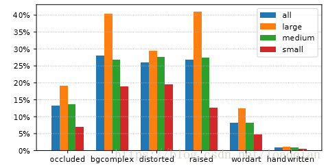

介绍
在本文中，我们用自然图像中包含的文字创建了一个大型数据集，名为Chinese Text in the Wild（CTW）。该数据集包含32,285张带有1,018,402个中文字符的图像，远远超出了之前的数据集，这些图片来自腾讯街景，从中国数十个不同的城市获取，没有任何特殊目的。由于其多样性和复杂性，该数据库存在极大的挑战性。它包含平面文本，凸起文本，城市文本，农村文本，低亮度文本，远处文本，部分遮挡文本等。对于每个图像，我们注释其所有中文。对每一个中文字符，我们注释它的底层字符，边界框和6个属性，以指示它是否被遮挡，复杂背景，扭曲，3D文字，艺术字和手写体。
数据集
图像选择
图像大小2048*2048；去掉一些重复的图像，最终选择32285张图像。
Annotation
对于一幅图像，首先用一个框选中一行文字，然后再框出每一个汉字，接着缩小这个框，显示其对应的汉字并判断之前的6个属性。如下图：
之前我们设定了六种属性，分别为是否被遮挡，背景是否清晰，是否扭曲，是否为3D文字，是艺术字还是标准的字体，是手写体还是印刷体，判断每个汉字是否具有这6种属性，结果见下图：
最后以数据集中的两幅图像为例，显示其文字识别情况，如下图：
数据集的划分
以8：1：1的比例将数据集分为训练集（25887张图像，812872个汉字），识别测试集（3269张图像，103519个汉字），检测测试集（3129张图像，102001个汉字）。
统计
32285张图像中一共包含3850种汉字。频率最高的50个汉字如下：
在训练集和测试集中包含特定数量汉字的图像和包含特定类别汉字的图像统计如下：
在训练集和测试集中，不同字体大小的汉字数量如下：
在所有字体大小、大、中、小(大是字体大小>=32、中是字体大小在[16，32)之间、小是字体大小<16)这四类中分析6中属性所占的比例如下： 
从中我们发现，字体比较大的汉字属性复杂的可能性越大。
数据集的多样性如下表，a-j分别为平面文本，凸起文本，城市文本，农村文本，水平文本、竖直文本，远处文本，近处文本，低亮度文本，部分遮挡文本。
基本算法和实验结果
汉字识别
最终将汉字分为1001类，1000类出现频率最高的汉字和其他，随机从测试集中选择20种汉字，选用几种已有的网络进行实验，实验结果如下：
并给出这几种网络对出现频率前十的汉字的top-1精确率，如下：
从上述结果中可以看到Google Inception取得的正确率最高，使用该网络对不同字体大小和不同属性的汉字进行实验，得到的结果如下：
汉字检测
我们使用YOLOv2算法来检测图像中的汉字，每个边框中包含一个汉字。对于训练集我们用YOLOv2设置输入分辨率为672*672，这样20482028的图像就被分为196个子图，每个分辨率为168\168，其中有23-24个像素是重叠的，然后这个672*672的子图作为下一次YOLOv2的输入。对于测试集，由于字符的大小不同，使用多尺度方案。首先，设置输入分辨率为1216*1216，然后分成16个子图，每个大小为608*608，重叠像素为128；同时将输入图像分为64个小的子图，每个大小为304*304，重叠像素为54-55；之后这80个子图再重新调整大小作为分辨率1216*1216的下一次YOLOv2算法的下一次输入。最后用非极大抑制来避免重复检测。
出现频率前10的汉字的AP百分比如下：
给出不同字体大小的查准率和查全率曲线，如下：
给出不同属性和不同字体大小的汉字使用YOLOv2算法后的查全率曲线如下：
使用YOLOv2算法检测的部分结果如下：
总结
本文主要介绍了户外文字识别方法及其数据库。采用了几种已有的方法来完成两个任务：识别选定区域的文字和从图像中检测出文字所在的位置，我们相信这个数据库可以为今后的文字识别和检测功能提供激励作用。
原文链接：https://arxiv.org/pdf/1803.00085.pdf
数据集和源程序下载链接：https://ctwdataset.github.io/